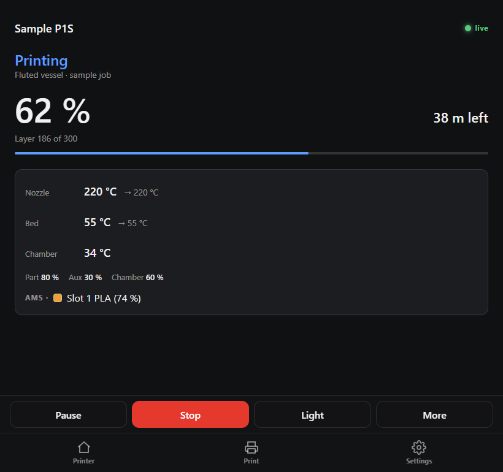
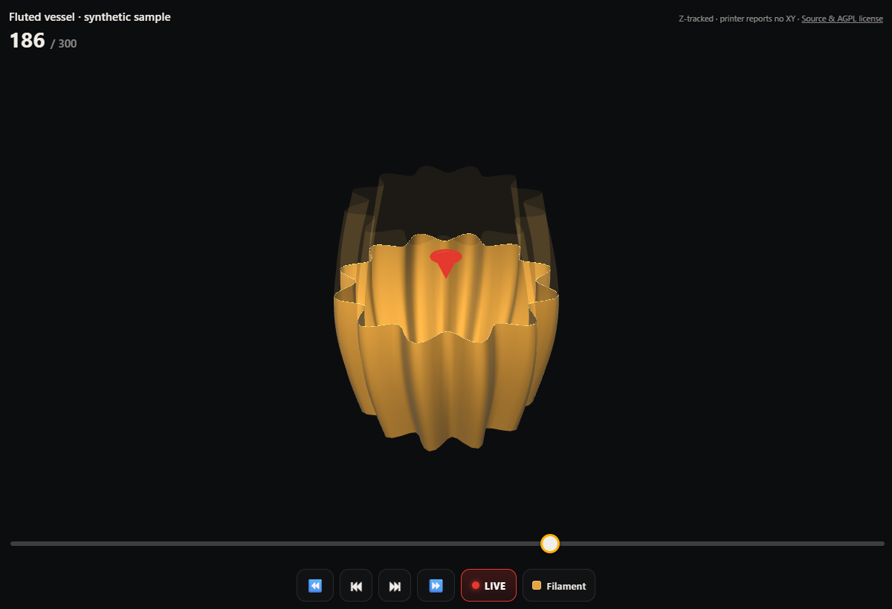

SELF-HOSTED / ANDROID + WEB
Bambu Bridge and Android companion
An Android companion and local bridge for Bambu Lab printers. Connect the print library, browser dashboard, slicer and home automation through one service.


P1S is the current beta target. Available features depend on model, firmware, attached hardware and qualified protocol support. Confirm printer behavior during supervised testing.
01 / CONNECT YOUR WORKFLOW
Android and the browser
The Android app is the primary owner interface. The browser dashboard provides another view into the bridge and printer state.
Slicer and automation
Connect OrcaSlicer, a REST/WebSocket API and Home Assistant. Desktop receivers and slicer helpers live alongside the bridge.
02 / INSPECT THE PRINT


03 / SETUP & SUPPORT
Run it on your network
Start with the setup guide and local pairing. Use the troubleshooting guide when reporting printer or connection behavior.
Contribute a useful report
Include app and server versions, printer model and firmware, reproduction steps and redacted logs.